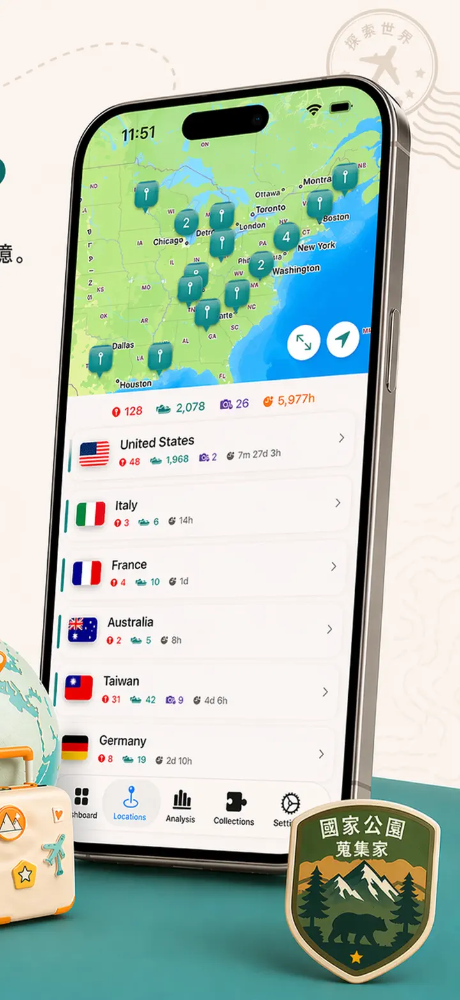
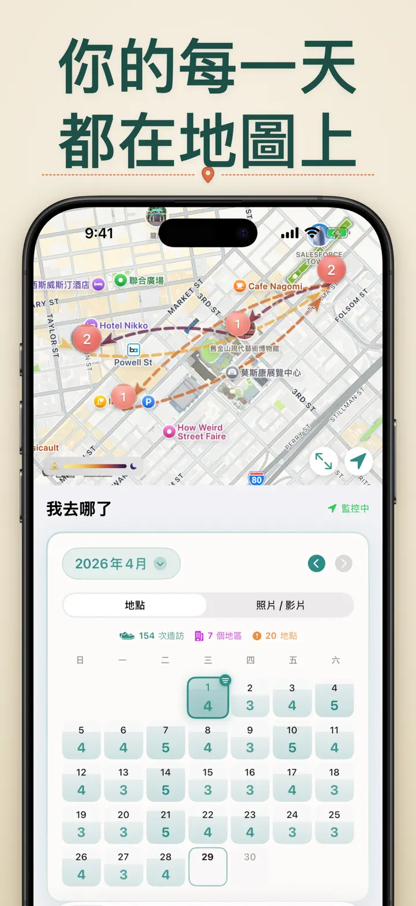
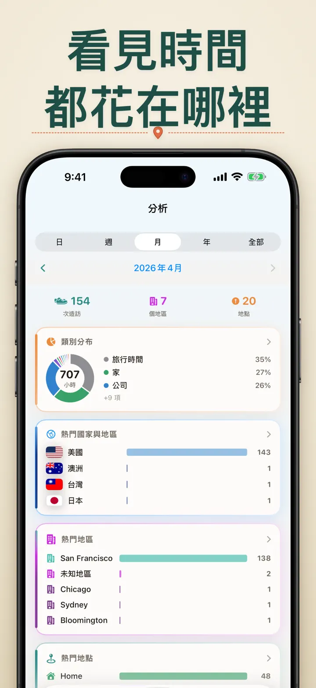
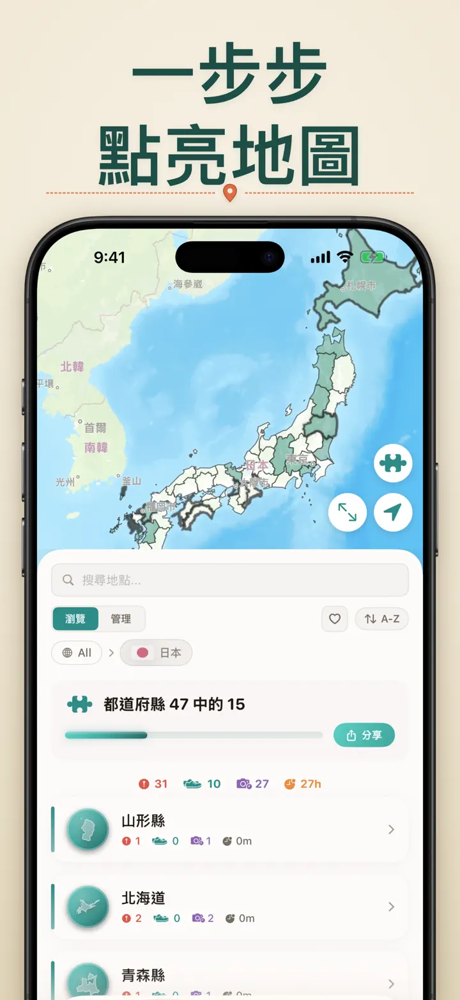
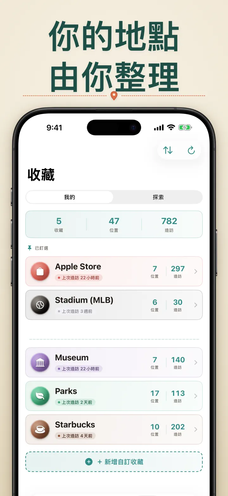
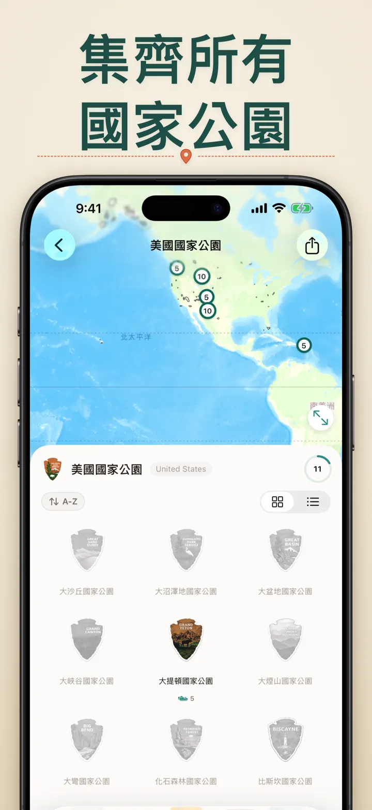
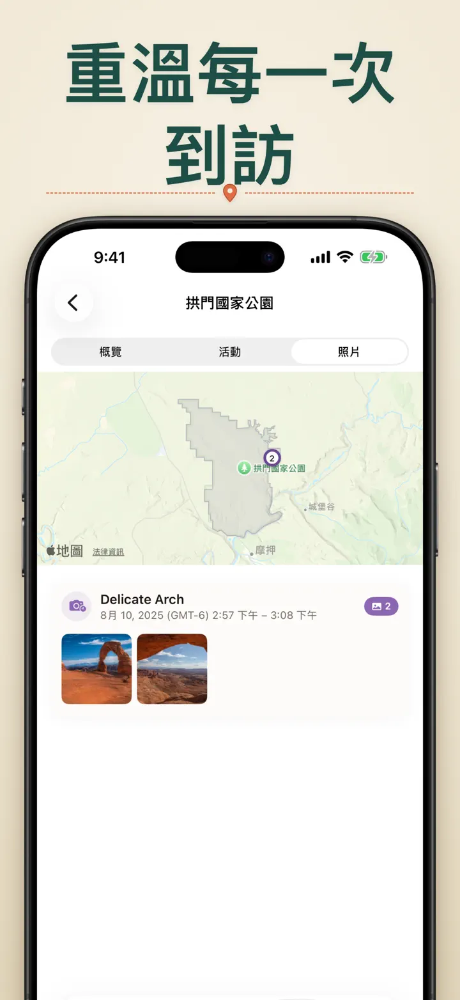

我去哪了?
全自動照片位置追蹤與時間軸，移動模式記錄，國家公園收藏記錄
全新：日本 103 座一宮神社，每座都有專屬木雕徽章。自動追蹤造訪、打造私人時間軸，全部在你的裝置上完成。
從 App Store 下載關於此 App
我去哪了 — 你的私人位置記憶庫
還記得上個月那間超棒的餐廳在哪嗎？想知道自己花多少時間在公司和家裡？「我去哪了」自動追蹤你的足跡，為你打造一條精美的生活軌跡時間線。
自動追蹤
無需手動記錄。App 會靜靜記下你抵達和離開的時間，不費吹灰之力就能建立完整的造訪紀錄。
智慧日曆檢視
以日、週或月為單位瀏覽你的行程。直覺式日曆一眼就能看到造訪次數和去過的地點。點擊任一天，立即回顧當天的足跡。
主畫面與鎖定畫面小工具
中型主畫面小工具讓你一眼掌握最近的造訪紀錄。鎖定畫面小工具可顯示目前位置、即時停留時間，或當日造訪次數 — 點按即可直接跳回 App。
地點智慧分類
地點會自動依地區和城市分組。你可以自訂類別，像是住家、公司、健身房或咖啡廳。還能建立專屬類別，搭配自選圖示和顏色，完美契合你的生活風格。
強大數據分析
發掘你的生活規律：
- 各類別的時間分配
- 最常造訪的地點
- 每週作息分析
- 造訪頻率趨勢
- 單一地點停留時間圖表 — 依日、週、月或年查看你通常停留多久
國家地區收藏
把旅行變成一幅拼圖！看看你在每個國家到訪了多少個州、省或地區。將探索進度以精美拼圖圖片分享給親朋好友，激勵他們踏上下一段旅程。
國家公園進度
走遍山川大地！自動記錄你到訪的國家公園，追蹤探索進度，與日常位置紀錄一同保存。
日本100名城
正在遊歷日本？全新內建收藏，自動追蹤你造訪過的日本100名城。在「收藏」分頁 → 探索 → 日本中即可找到。
自訂收藏
想追蹤什麼都可以 — Apple 直營店、博物館、精釀啤酒吧、獨立書店通通沒問題。建立一個收藏、設定關鍵字，讓它自動累積。隨時都能手動新增或移除地點。每個收藏都會顯示數量、完整造訪紀錄和地圖。
匯入你的位置歷史
從其他 App 轉過來？帶上你的完整歷史記錄 — 格式自動辨識，支援大型匯出，匯入前還能預覽：
- Google Timeline（Google Maps 匯出或 Google Takeout）
- Arc Timeline（你從 Arc 匯出的每月 .json 檔案）
- Moves（ProtoGeo／Facebook Moves 備份）
批次管理
在同一頁面管理所有地點。搜尋、排序、篩選一應俱全。選取多個地點批次分類或刪除，讓你的地點庫井井有條。
隱私至上
你的位置資料只存在你的裝置上。不需註冊帳號，不會上傳至伺服器。你的行蹤只有你知道。
最適合用來：
- 追蹤工作時數和地點
- 記住去過的餐廳和店家
- 分析日常作息
- 記錄旅行日誌與國家公園造訪
- 報帳和里程追蹤
- 了解時間分配
功能特色：
- 自動偵測抵達和離開
- 日曆檢視搭配每日造訪時間線
- 主畫面與鎖定畫面小工具，支援深層連結
- 依地區和城市分組地點
- 自訂類別搭配圖示和顏色
- 智慧類別建議（來自 Apple 地圖）
- 詳細造訪紀錄含停留時間
- 單一地點停留時間圖表（日／週／月／年）
- 數據分析儀表板含豐富洞察
- 搜尋和篩選地點
- 國家地區收藏及可分享拼圖圖片
- 國家公園進度追蹤
- 「日本100名城」內建收藏
- 自訂收藏，支援關鍵字自動配對、手動編輯與統計
- 批次管理地點
- 從 Google Timeline、Arc Timeline 和 Moves 匯入
- 匯出功能
- 無需註冊帳號
- 隱私優先設計
現在就開始建立你的位置記憶。下載「我去哪了」，再也不會忘記去過的地方。
Privacy Policy: https://masawata.net/privacy-policy.html Terms Of Service: https://www.apple.com/legal/internet-services/itunes/dev/stdeula/
螢幕快照







我去哪了?
全新：日本 103 座一宮神社，每座都有專屬木雕徽章。自動追蹤造訪、打造私人時間軸，全部在你的裝置上完成。
從 App Store 下載